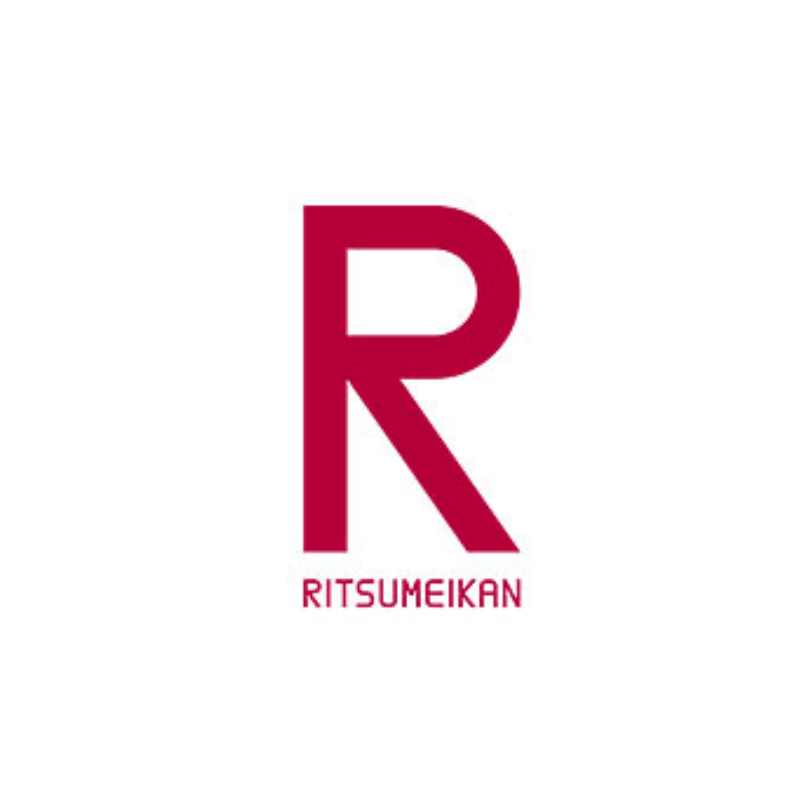

同志社大学

コロナウイルスによって自粛が要請されている今、
新入生同士の交流は非常に困難になっています。
関関同立の新入生は今、大学生活に不安だらけでしょう。
そんな大学生の不安を少しでも拭いたい
オンラインで、第２の教室として、学校と同じように交流して欲しい
新入生同士の交流はもちろん、上回生がサークル説明会を行う場としてもご利用していただけます♪
このサイトを作っている私たちも大学生です。
関関同立生では、同志社大学社会学部2回生と文化情報学部3回生がいます。
新入生の不安を知っているからこそ、
少しでも学校と同じように、この場で新入生同士の交流が増えることを願っています。
使い方はとってもカンタン！
自分の大学をクリックして、
カメラの有無、会話の内容などから気に入った投稿を見つけたら、
クリックして交流を始めるだけ！
もちろん自分でZOOMからURLを取得して、
交流の場を作るのもOK！
新歓が中止となり、サークル探しに苦労していませんか？
関関同立のサークルは数え切れないほどあります！
そこでSecond Classでは、
TwitterやInstagramのアカウントを可能な限り記載しました。
是非自分のお気に入りのサークルを見つけてください！
また、私たちはLINE・TwitterDMにて新入生の悩み相談、サークルの掲載依頼等を承っています。
気軽に利用してくださいね♪